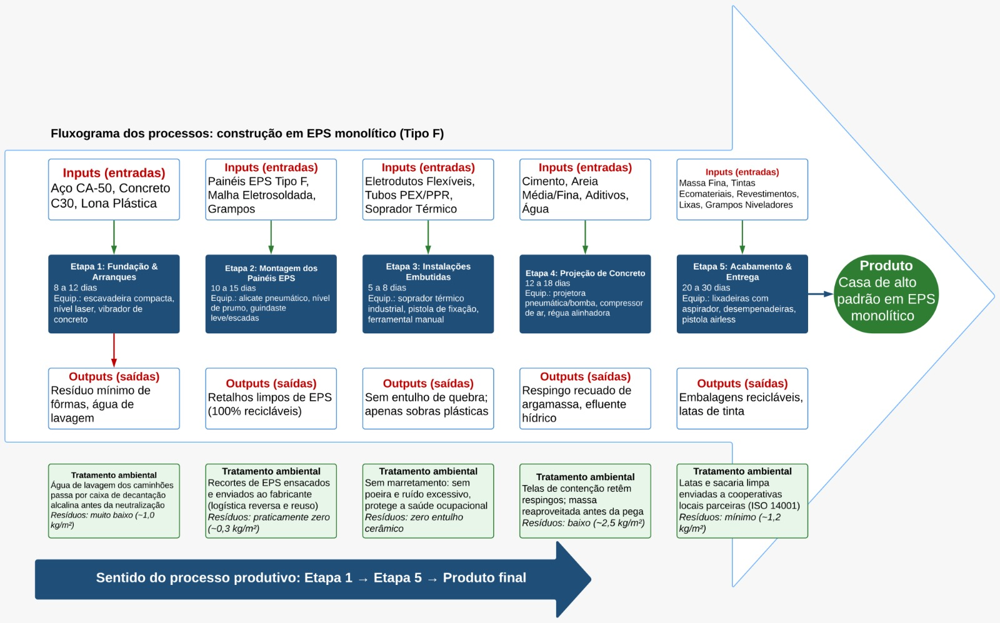

ANÁLISE COMPARATIVA E GESTÃO AMBIENTAL
Do canteiro ao ciclo de vida.
Dois sistemas construtivos, uma decisão orientada por desempenho, resíduos e responsabilidade ambiental.
Profa. Tálita Floriano dos Santos
Mauro GM Cappellaro
01 / O PROBLEMA
Construir também é administrar fluxos.
Entradas, decisões e saídas revelam onde o desempenho ambiental acontece de verdade.

02 / SISTEMA EPS
Menos massa. Mais coordenação.
O painel monolítico transforma a obra em uma sequência mais industrializada e previsível.
Painéis cortados conforme o projeto reduzem ajustes e perdas.
Canaletas no núcleo de EPS evitam rasgos e poeira cerâmica.
Malha de aço e concreto projetado formam o envelope estrutural.
03 / SISTEMA TRADICIONAL
Robusto, conhecido, intensivo.
A alvenaria cerâmica depende de mais etapas manuais, correções e movimentação de materiais.
Maior peso próprio exige fundações e caixarias mais intensas.
Tijolo a tijolo, com perdas associadas a transporte e quebras.
Instalações embutidas geram poeira, entulho e retrabalho.
04 / COMPARAÇÃO
O impacto aparece na curva.
Uma leitura rápida dos indicadores que orientam a escolha do sistema.
05 / GESTÃO AMBIENTAL
O resíduo não termina na caçamba.
Um SGA transforma prevenção, rastreabilidade e logística reversa em rotina operacional.
ISO 14001prevenirsepararreutilizarmedir
06 / CONCLUSÃO
Desempenho é uma escolha de projeto.
Comparar processos é tornar visível o que o canteiro consome, transforma e devolve ao ambiente.